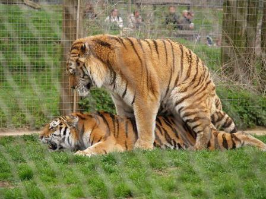

||
EL TIGRE DE BENGALA
.jpg)
TIGRE DE BANGALA (Panthera tigris tigris):
El tigre de Bengala (Panthera tigris tigris), también conocido como tigre de Bengala real o tigre indio, es una subespecie de tigre que habita en la India, Nepal, Bangladés, Bután, Birmania y Tíbet. Es la subespecie más numerosa y conocida de tigre, y se encuentra en una gran variedad de hábitats, incluyendo sabanas y bosques tropicales y subtropicales. Su piel es generalmente de color naranja o leonado. Existe una mutación genética que produce que la piel naranja del tigre sea sustituida por el color blanco; a estos tigres se les conoce como tigres blancos. Una mutación aún más rara (de la que existen menos de cien ejemplares, todos en cautiverio), se conoce como tigre dorado. El tigre es un animal nacional en la India y Bangladés.
En 2017 un equipo de investigadores pertenecientes a la UICN publicó una nueva clasificación taxonómica de la familia felidae en la que solo reconocía dos subespecies de tigres, el tigre de Asia continental (Panthera tigris tigris), que agrupa al tigre de Bengala, siberiano, de Indochina, sur de China, malayo, así como el tigre extinto del Caspio y los tigres de la sonda (Panthera tigris sondaica) que agrupa al tigre de Sumatra así como a los ya desaparecidos tigres de Java y Bali. Esta evaluación se basa en una extensa revisión de publicaciones recientes sobre la morfología del tigre y su filogeografía.
Anteriormente se le consideraba la segunda subespecie en tamaño, detrás del tigre siberiano (P. tigris altaica). Sin embargo estudios recientes sugieren que en la actualidad esta podría ser la subespecie de mayor tamaño. La longitud total de los machos es de 270-310 cm, mientras que la de las hembras es de 240-265 cm; la cola mide unos 85-100 cm de largo y la altura a los hombros es de 90-110 cm. El peso depende de la región; algunos tigres están por debajo de los 100 kg mientras que otros llegan a los 230 kg en el caso de los machos. En Chitwal siete tigres macho arrojaron un promedio de 221 kg.73 Sin embargo, aquellos machos que habitan el Centro de India, tienen un peso de entre 160 a 233 kg, y un promedio de 190 kg para los machos y de 131 kg para las hembras. Aun así, se conoció un gran macho del parque nacional Ranthambore, de nombre Ustad (T24), al que se le adjudica la muerte de cuatro personas entre 2010 y 2015, que llegó a los 250 kg de peso.
El tigre de Bengala más pesado, confirmado en los récords de caza, fue un macho de 258.6 kg, cazado al norte de India en 1938. Sin embargo los machos más pesados, registrados por científicos hasta ahora, son dos tigres (M105 y M026) de más de 270 kg, capturados en Nepal, en 1980 y 1984, respectivamente. El tigre de Bengala más grande, medido entre las curvas, fue un macho cazado por Archibald Dunbar Brander, que alcanzó los 221 cm de longitud cabeza-cuerpo, con una circunferencia de pecho de 150 cm, una altura a los hombros de 109 cm y una cola de tan solo 81 cm, probablemente cercenada por un macho rival. Si bien este ejemplar no pudo ser pesado, se calculó que su masa corporal no sería menor de los 272 kg.
Según los Récords Mundiales Guinness, el tigre de Bengala de mayor tamaño conocido fue un gran macho cazado en 1967; midió 322 cm de largo total en línea recta (338 cm entre las curvas del lomo) y pesó 388.7 kg. Aunque esto no se considera un peso científicamente correcto dado que sus medidas no coinciden con su peso y en las fotos el tigre no goza de gran tamaño, así que es muy posible que su peso real sea mucho más bajo, el ejemplar fue cazado al norte de India por David Hasinger, un industrial de Filadelfia. Actualmente[¿cuándo?] este ejemplar se encuentra exhibido en el Instituto Smithsoniano, en el salón de los Mamíferos. A principios del siglo xx se reportaron ejemplares machos que alcanzaron los 360 cm de longitud total; sin embargo no existe corroboración científica de tales tamaños y lo más probable es que fueran medidos sobre las curvas del lomo.
¿CUALES SON SUS COSTUMBRES?
Especie selvática por excelencia, vive allí donde abundan los félidos y está particularmente adaptado para la caza.
Su pelaje le sirve para camuflarse entre las sombras de los árboles o la hierba. Patrulla su territorio por las noches, solitario; es muy sigiloso, tanto que parece que sus patas apenas toquen el suelo.
Los tigres están en el top de depredadores, tan solo por detrás de los osos.
En época de apareamiento, sin embargo, son sorprendentemente tiernos: macho y hembra se muestran muy tolerantes el uno con el otro. Alcanzan la madurez sexual a los tres años, y suelen tener camadas de dos a tres cachorros (después de 103 días de gestación).
Los tigres suelen ser por regla general animales que viven siempre en solitario, a excepción de las hembras, las cuales viven con sus crías hasta los 2 años de edad
Las hembras siempre suelen vivir dentro de un territorio de un macho. El macho a pesar de que no vive con las hembras, siempre protege ese territorio. No solo protege el territorio por la caza, sino para asegurarse que ningún otro macho está cerca para aparearse con ellas. Hay que destacar que los machos solo se juntan con las hembras para aparearse y para nada más. Aunque algunos estudios han demostrado que algunos machos han cuidado de sus crías cuando las hembras han fallecido. No suele ser muy común, pero en ocasiones se ha podido comprobar esto.
ALIMENTACION DE LOS TRIGES:
Tienen una gran visión, la cual les permite ver de manera excelente tanto de día como de noche; sin embargo prefieren realizar su caza finalizando la tarde y comenzando la noche; por lo que normalmente usan el día para reponer las energía y así cazar con mayor destreza y velocidad.
El tigre de bengala es un animal salvaje del bosque carnívoro en todo su esplendor; y los animales de los que se alimenta viven principalmente en su mismo entorno; por ejemplo: búfalos, jabalís, cebras, entre otros animales de gran tamaño. Pueden ingerir entre 10 y 20 kilos de comida en cada caza, debido a su gran tamaño y contextura musculosa. Gracias a sus poderosos músculos y afiladas garras, además de su gran fuerza en la mandíbula y su brillante visión, es catalogado por muchos como el mejor cazador de la historia.
Los tigres, independientemente de sus subespecies, son animales carnívoros. Esto significa que comen carne y normalmente no consideran ningún tipo de vegetación para ser parte de su dieta. Para comer, el tigre tiene que cazar a su presa, un proceso que se enseña a los cachorros por la madre cuando tienen solo unos pocos meses de edad con el fin de entrenarlos para sobrevivir por su cuenta. En los casos en que la comida no esté disponible o con el fin de facilitar la digestión, el tigre come bayas, hierbas y diferentes tipos de frutas.
PRESAS DE LOS TIGRES
Los tigres de bengala se alimentan de:
Antílopes.
Búfalos asiáticos.
Ciervos.
Gaures.
Jabalíes.
Puercoespines.
Monos.
Pavos reales.
Tapires.
En casos raros consumen crías de rinocerontes y elefantes así como de otros grandes carnívoros como los leopardos.
.jpg) Sin embargo, las opciones más comunes de la dieta para los tigres incluyen el sambar, el chital (también conocido como el ciervo manchado o Ciervo axis), el ciervo sika, el nilgai, los búfalos, el gaur (una especie bovina), los monos, las civetas, el puerco espín, e, incluso, peces, ranas, cangrejos, lagartijas, lagartos y serpientes. Si está disponible y vulnerable, un tigre no va a evitar atacar a los bebés elefantes o al rinoceronte bebé. Aun así, el tigre no tiene miedo de la presa, y no discriminará entre animales adultos sanos, enfermos o débiles. Las mejores condiciones de caza del tigre son en días nublados, fríos o cuando el sol se pone.
Sin embargo, las opciones más comunes de la dieta para los tigres incluyen el sambar, el chital (también conocido como el ciervo manchado o Ciervo axis), el ciervo sika, el nilgai, los búfalos, el gaur (una especie bovina), los monos, las civetas, el puerco espín, e, incluso, peces, ranas, cangrejos, lagartijas, lagartos y serpientes. Si está disponible y vulnerable, un tigre no va a evitar atacar a los bebés elefantes o al rinoceronte bebé. Aun así, el tigre no tiene miedo de la presa, y no discriminará entre animales adultos sanos, enfermos o débiles. Las mejores condiciones de caza del tigre son en días nublados, fríos o cuando el sol se pone.
FORSA DE CAZA
Es muy raro que los tigres cacen en parejas o en manada, ya que son independientes y solitarios por naturaleza, y prefieren cazar solos. No son carroñeros oportunistas, pero acechan y cazan a sus presas activamente, yendo en busca de ella cuando y como sea necesario. El gato sigiloso se oculta entre el follaje, esperando el momento perfecto para lanzarse al ataque sobre la presa desprevenida.
El tigre suele atacar desde el lado o la parte de atrás; una posición en la que la presa no es tan consciente de su presencia. Se acerca hacia adelante poco a poco hasta llegar a una distancia en la que pueda atacar por delante y agarrar a la presa antes de que tenga la oportunidad de escapar. Por lo general, se abalanza sobre su presa, con las garras delanteras para agarrar la presa por su cuello, hombros y / o espalda. Como tira con fuerza a su víctima al suelo, utiliza sus poderosas mandíbulas para romperle el cuello (detrás de la cabeza) o arrancarle la garganta. Esto significa que la víctima experimenta la muerte más corta y menos estresante posible.
¿COMO SE REPRODUCEN?
Reproducción de los tigres:
Los tigres no tienen una temporada establecida para la reproducción, son capaces de hacerlo durante todo el año. Sin embargo, la mayoría de las veces se produce desde finales de noviembre hasta principios de abril. Los machos están listos para aparearse cuando tienen aproximadamente 5 años de edad, las hembras alrededor de unos 3 años y medio de edad.
Durante el enamoramiento se escuchan a los tigres haciendo una serie de gritos y chillidos de unos a otros, los varones suelen comenzar, y las hembras son muy propensas a responder. Cuando entran en contacto unos con otros se huelen entre sí, ronronean, frotándose uno contra el otro, esto es muy común entre ellos.
Algunas parejas se van muy lejos para poder acariciarse bien y para acomodar a los demás. Cuando un macho y una hembra se gustan y deciden aparearse entre sí, participaran en el acto en varias ocasiones a lo largo de un par de días, este es el tiempo en que la hembra se mantendrá en calor en un período, es común que un macho se aparee con varias hembras diferentes, siempre y cuando esté sano y sus necesidades básicas sean satisfechas, una vez ocurrido el embarazo, el mismo durará aproximadamente 16 semanas hasta que los cachorros nazcan. Las hembras irán a una cueva antes de que nazcan los cachorros.
En general, la madre dará a luz a tres crías a la vez de alrededor 2 libras cada una y son totalmente dependientes de su madre, ya que nacen ciegas. Los cachorros permanecerán en la cueva cerca de 8 semanas. Los machos a menudo tratan de matar a estos cachorros, si entran en contacto con ellos para que la hembra sea capaz de volver a aparearse con él. Las investigaciones han demostrado que siempre existe un cachorro que es el que domina, por lo general, es un macho, pero esto no es siempre así. Los cachorros participarán en distintos juegos entre ellos y con su madre. El cachorro que más domine es el que la madre le va a dar a la mayoría de los alimentos y la mejor atención aunque las cosas se vuelvan escasas para todos. Los cachorros aprenderán a cazar con su madre hasta que se hagan mayores, en el momento en que estos cachorros tienen de un año y medio a dos años de edad ya están dispuestos a ir por su cuenta, las hembras tienden a hacer un territorio muy similar al de su madre.
Los machos, tienden a extenderse mucho más allá, las hembras tienden a ser muy buenas madres para sus hijos pues son muy celosas cuando se trata de mantenerlos a salvo de depredadores, a veces las hembras tendrán que optar por el cuidado de uno o dos de los cachorros, estos serán los más fuertes del grupo por el instinto de supervivencia, el más apto es capaz de continuar, de lo contrario corren el riesgo de que la totalidad de sus cachorros mueran si tratan de seguir adecuadamente el cuidado de todos ellos. La tasa de mortalidad de los tigres jóvenes es extremadamente alta, menos de la mitad de ellos sobrevivirá los dos años de vida, ya que pueden ser asesinados por los hombres que se ven amenazados por ellos, o por no obtener suficiente alimento de su madre, también se pueden convertir en presas de otros animales que hay en la naturaleza.